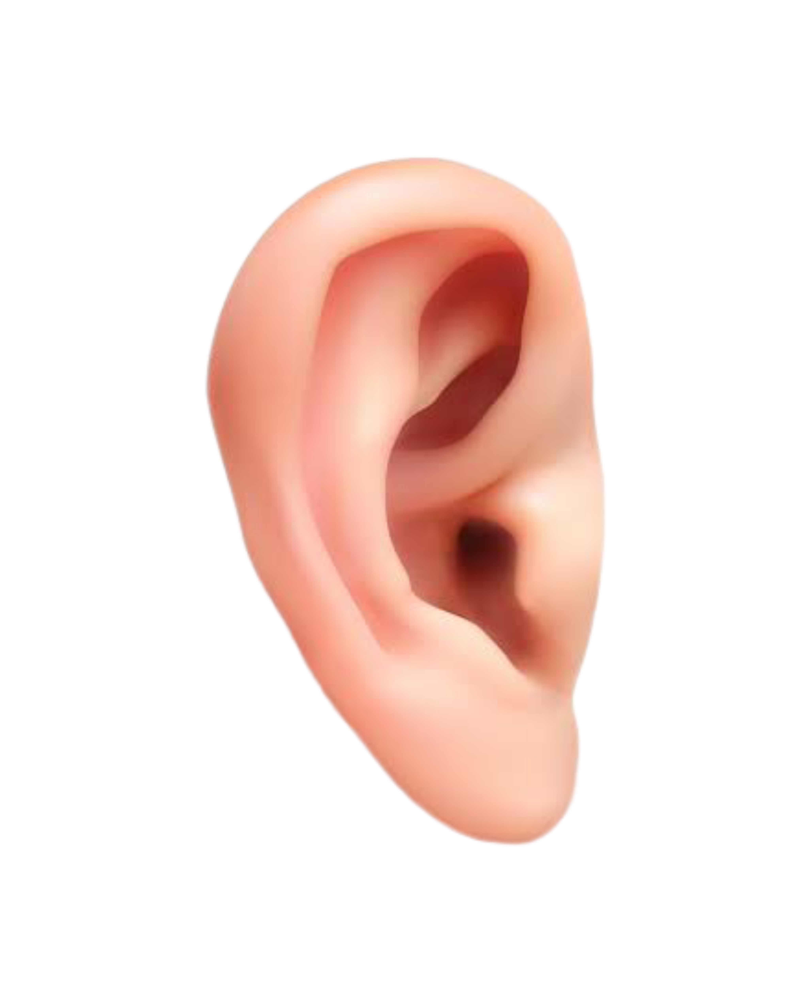
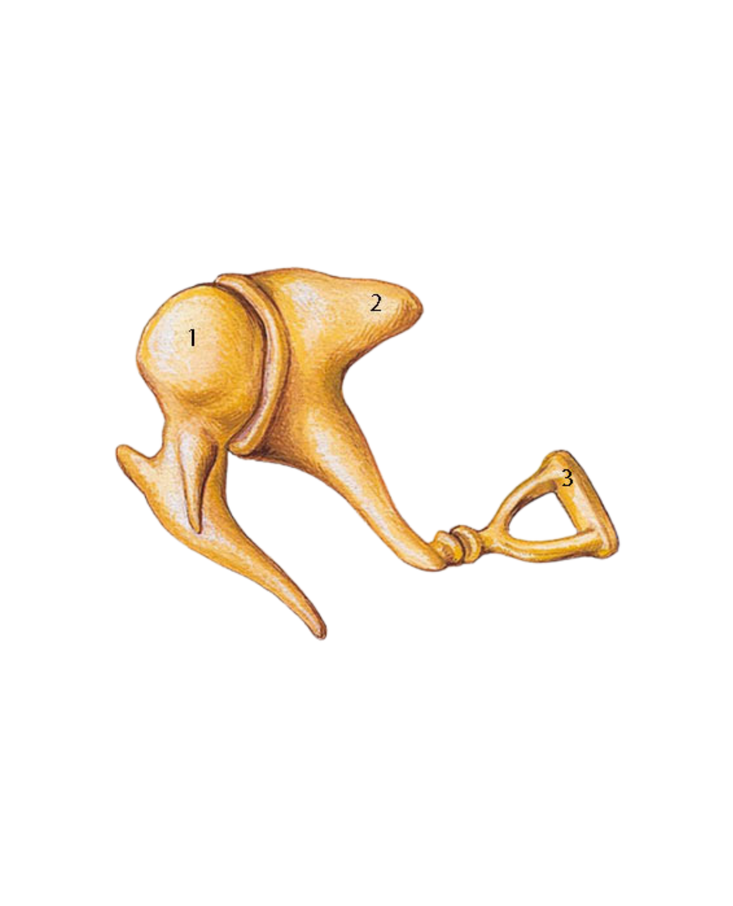
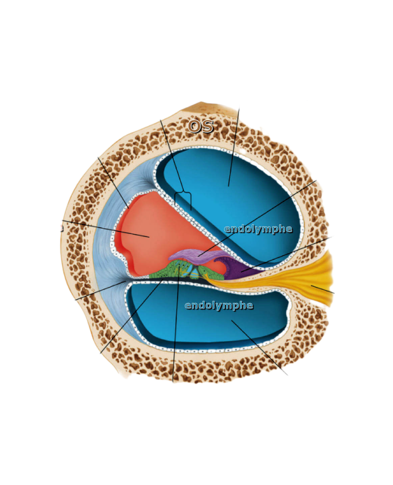
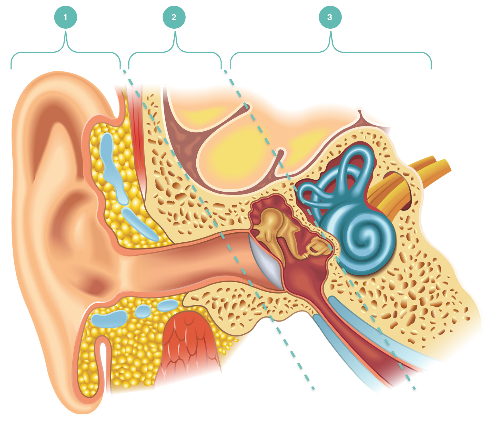

Le pavillon de l'oreille
Le pavillon (ou auricule) est la partie visible de l'oreille. Son relief complexe, formé de cartilage élastique recouvert de peau, joue un rôle dans la localisation spatiale des sons. Cliquez sur les points pour identifier chaque région.

Pavillon de l'oreille — cliquez sur un point pour en savoir plus
Rôle du pavillon
Le pavillon collecte et amplifie légèrement les ondes sonores, en les dirigeant vers le canal auditif externe. Sa forme asymétrique et ses replis cartilagineux filtrent différemment les sons selon leur provenance verticale, aidant le cerveau à localiser une source sonore au-dessus ou en dessous.
Canal auditif externe
Long d'environ 2,5 cm, il conduit les sons du pavillon jusqu'au tympan. Légèrement courbé, il est tapissé de peau contenant des glandes sébacées et cérumineuses. Le cérumen protège contre les corps étrangers et l'humidité, et possède des propriétés antibactériennes.
Les osselets : la plus petite chaîne du corps
L'oreille moyenne est une cavité remplie d'air logée dans l'os temporal. Elle contient la chaîne des trois osselets — les plus petits os du corps humain — qui transmettent et amplifient mécaniquement les vibrations du tympan vers l'oreille interne.

Chaîne des osselets — marteau (1), enclume (2), étrier (3)
Transmission & amplification
La chaîne ossiculaire fonctionne comme un système de leviers. Elle adapte l'impédance acoustique entre l'air et les fluides de la cochlée. Sans cette adaptation, plus de 99 % de l'énergie sonore serait perdue par réflexion.
Trompe d'Eustache
Ce conduit relie l'oreille moyenne au nasopharynx. Il s'ouvre lors de la déglutition ou du bâillement pour équilibrer la pression de part et d'autre du tympan. Un dysfonctionnement provoque la sensation d'oreilles bouchées ressentie en avion.
La cochlée & l'organe de Corti
Nichée dans la partie la plus dure de l'os temporal, l'oreille interne comprend la cochlée pour l'audition et le vestibule pour l'équilibre. La cochlée convertit les vibrations mécaniques en signaux électriques.

Coupe transversale de la cochlée — cliquez sur un point pour en savoir plus
Tonotopie
La cochlée est organisée de façon tonotopique : chaque fréquence fait vibrer une zone précise de la membrane basilaire. Les sons aigus font vibrer la base ; les sons graves font vibrer l'apex.
Cellules ciliées
L'organe de Corti contient environ 3 500 cellules ciliées internes et 12 000 externes. Non régénérables, leur destruction par le bruit ou le vieillissement est définitive et se traduit par une surdité irréversible.
Anatomie de l'oreille interne en 3D
Faites pivoter le modèle à la souris (clic gauche), zoomez avec la molette, et déplacez-le avec le clic droit. Prenez le temps d'explorer les structures de l'oreille interne sous tous les angles.
Du pavillon au nerf auditif
Schéma complet du conduit auditif, de l'oreille externe à l'oreille interne. Cliquez sur les lettres pour retrouver les grandes zones.

Coupe anatomique complète de l'oreille humaine